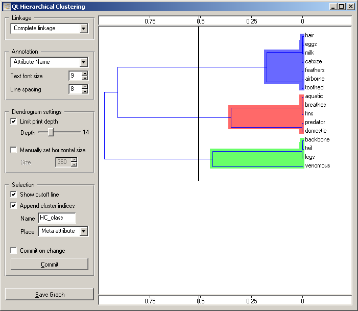
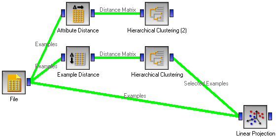
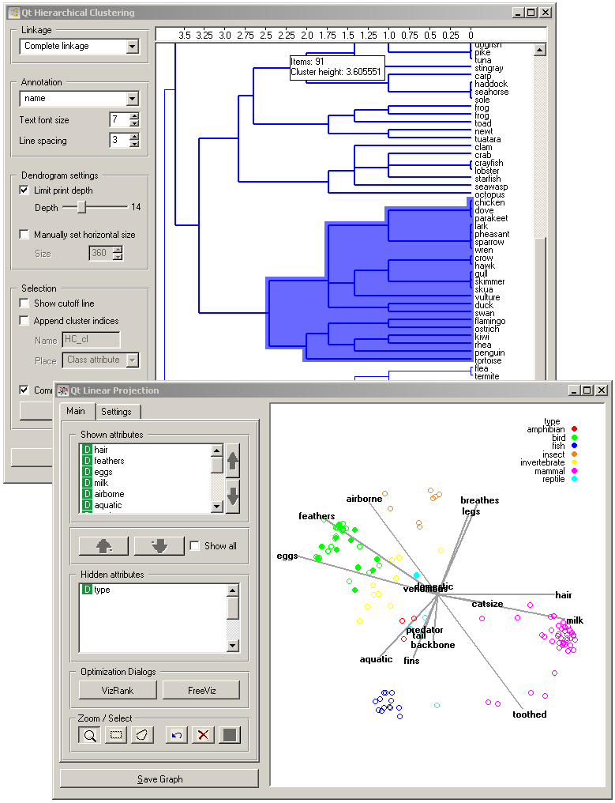
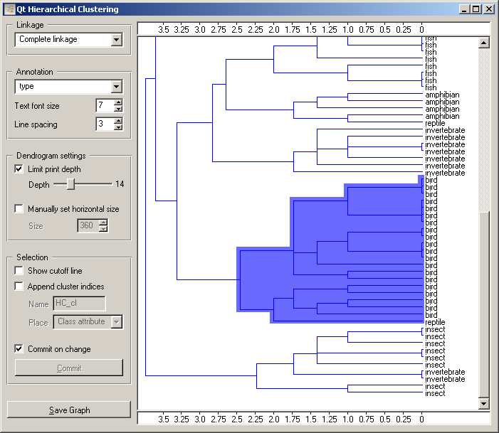
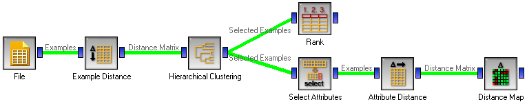
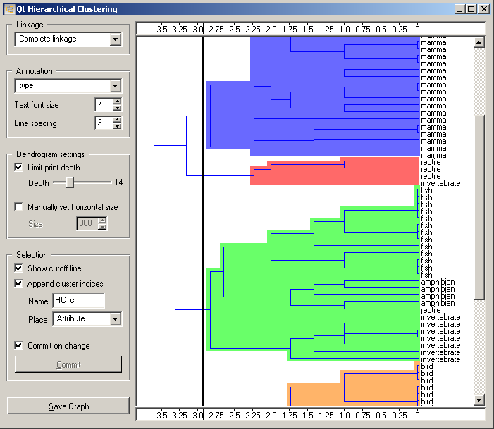

This is documentation for Orange 2.7. For the latest documentation, see Orange 3.
Hierarchical Clustering¶
Groups items using a hierarchical clustering algorithm.
Signals¶
- Inputs:
- Distance Matrix
A matrix of distances between items being clustered
- Outputs:
- Selected Examples
A list of selected examples; applicable only when the input matrix refers to distances between examples
- Remaining Examples
A list of unselected examples
- Centroids
A list of cluster centroids
Description¶
The widget computes hierarchical clustering of arbitrary types of objects from the matrix of distances between them and shows the corresponding dendrogram. If the distances apply to examples, the widget offers some special functionality (adding cluster indices, outputting examples...).
The widget supports three kinds of linkages. In Single linkage clustering, the distance between two clusters is defined as the distance between the closest elements of the two clusters. Average linkage clustering computes the average distance between elements of the two clusters, and Complete linkage defines the distance between two clusters as the distance between their most distant elements.
Nodes of the dendrogram can be labeled. What the labels are depends upon the items being clustered. For instance, when clustering attributes, the labels are obviously the attribute names. When clustering examples, we can use the values of one of the attributes, typically one that give the name or id of an instance, as labels. The label can be chosen in the box Annotate, which also allows setting the font size and line spacing.
Huge dendrograms can be pruned by checking Limit pring depth and selecting the appropriate depth. This only affects the displayed dendrogram and not the actual clustering.
Clicking inside the dendrogram can have two effects. If the cut off line is not shown (Show cutoff line is unchecked), clicking inside the dendrogram will select a cluster. Multiple clusters can be selected by holding Ctrl. Each selected cluster is shown in different color and is treated as a separate cluster on the output.
If Show cutoff line is checked, clicking in the dendrogram places a cutoff line. All items in the clustering are selected and the are divided into groups according to the position of the line.
If the items being clustered are examples, they can be added a cluster index (Append cluster indices). The index can appear as a Class attribute, ordinary Attribute or a Meta attribute. In the former case, if the data already has a class attribute, the original class is placed among meta attributes.
The data can be output on any change (Commit on change) or, if this is disabled, by pushing Commit.
Examples¶
The schema below computes clustering of attributes and of examples.
We loaded the Zoo data set. The clustering of attributes is already shown above. Below is the clustering of examples, that is, of animals, and the nodes are annotated by the animals’ names. We connected the Linear Projection showing the freeviz-optimized projection of the data so that it shows all examples read from the file, while the signal from Hierarchical clustering is used as a subset. Linear projection thus marks the examples selected in Hierarchical clustering. This way, we can observe the position of the selected cluster(s) in the projection.
To (visually) test how well the clustering corresponds to the actual classes in the data, we can tell the widget to show the class (“type”) of the animal instead of its name (Annotate). Correspondence looks good.
A fancy way to verify the correspondence between the clustering and the actual classes would be to compute the chi-square test between them. As Orange does not have a dedicated widget for that, we can compute the chi-square in Attribute Distance and observe it in Distance Map. The only caveat is that Attribute Distance computes distances between attributes and not the class and the attribute, so we have to use Select Attributes to put the class among the ordinary attributes and replace it with another attribute, say “tail” (this is needed since Attribute Distance requires data with a class attribute, for technical reasons; the class attribute itself does not affect the computed chi-square).
A more direct approach is to leave the class attribute (the animal type) as it is, simply add the cluster index and observe its information gain in the Rank.
More tricks with a similar purpose are described in the documentation for K-Means Clustering.
The schema that does both and the corresponding settings of the hiearchical clustering widget are shown below.
 